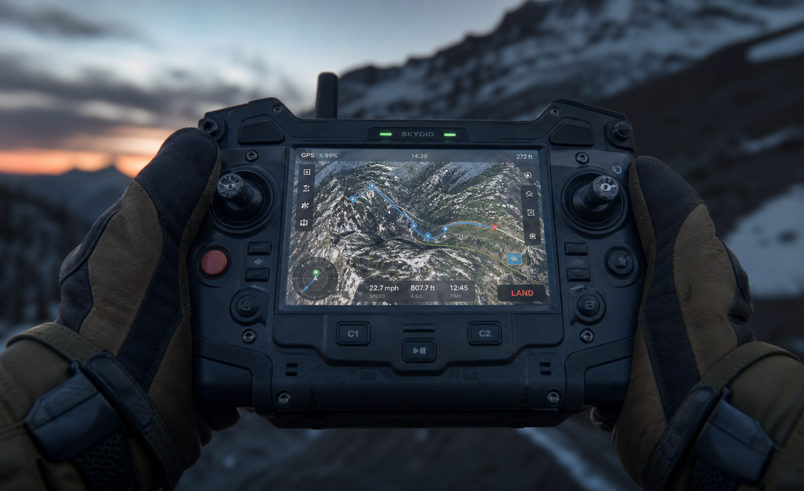
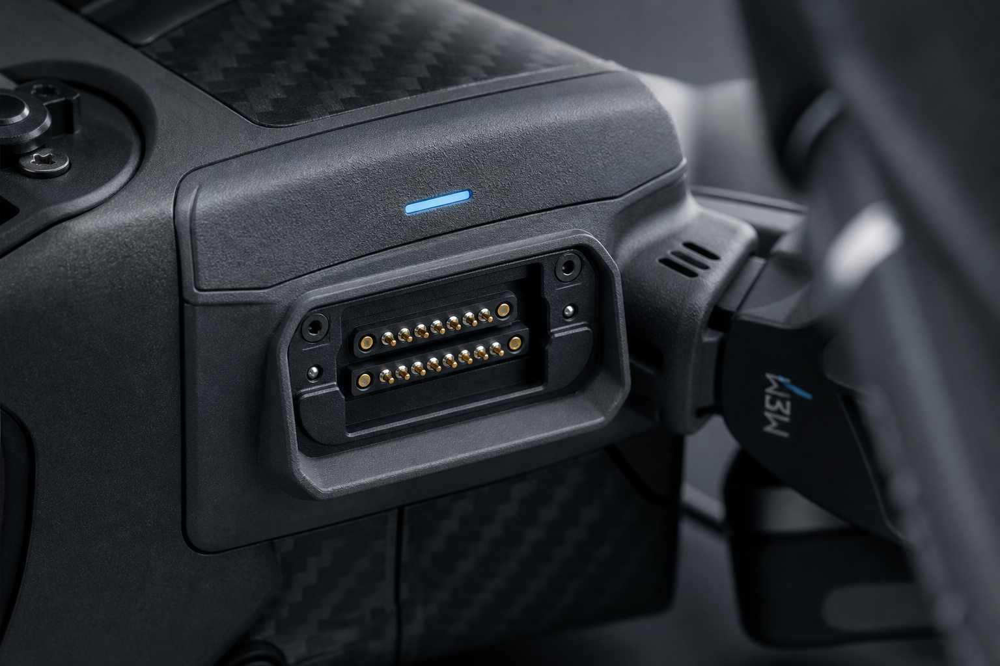

Sight beyond anything you've flown.
The best sensors ever fitted to an aircraft this small — piloted by the sharpest AI in the sky, so the data you need comes home every time.
Cameras with an unfair advantage.
More resolving power and better glass than anything in its class, packaged as swappable sensor modules — so the right optics fly every mission.
- Focal 46 mm eq.
- Resolution 64 MP
- Aperture f/1.8
- FOV 50°
- Focal 190 mm eq.
- Resolution 48 MP
- Aperture f/2.2
- FOV 13°
- Resolution 640×512
- Sensitivity <30 mK
- FOV 41°
- Per-pixel temp YES
- Focal 46 mm eq.
- Resolution 64 MP
- Aperture f/1.8
- FOV 50°
- Focal 20 mm eq.
- Resolution 50 MP
- Aperture f/1.95
- FOV 93°
- Resolution 640×512
- Sensitivity <30 mK
- Flashlight 22 lux @ 3 m
- Focal 46 mm eq.
- Resolution 64 MP
- Aperture f/1.8
- FOV 50°
- Focal 20 mm eq.
- Resolution 50 MP
- Aperture f/1.95
- FOV 93°
- Output 22 lux @ 3 m
- Weight saving -9%
Read a plate at 800 ft
The 190 mm telephoto resolves vehicles, people and text far beyond the range of standard drone optics.
0.1 mm cracks at 1 m
The 50 MP wide module with onboard light resolves hairline defects — even in unlit vaults.
A person in pitch dark
Sub-30 mK thermal sensitivity finds heat signatures a hot roof would normally hide.
 640×512 · <30 MK
640×512 · <30 MKHeat vision without compromise.
A premium radiometric core delivers per-pixel temperature with sensitivity to spare. Onboard tuning sharpens distant detail automatically, so interpretation takes seconds, not training courses.
- 40% more sensitive than comparable class sensors.
- Radiometry everywhere. Accurate readings, any pixel, any time.
- Smart AGC. Scene-adaptive contrast, hands-free.
 ONBOARD AI
ONBOARD AIA GPU where the pilot's nerves used to be.
An onboard edge-AI supercomputer fuses six navigation cameras into full 360° awareness. The aircraft sees everything, decides in real time, and gets smarter with every update.
- 10× compute over the previous generation.
- Zero blind spots. Six custom nav lenses, full sphere.
- GPS-denied flight. Vision-first navigation holds the mission.
 DARKSIGHT
DARKSIGHTAutonomy in the dark. An industry first.
DarkSight navigates by visible or infrared illumination, avoiding obstacles in zero light. 24/7 operations aren't a stretch goal — they're the default setting.
See it in DFR serviceFly it your way.
By controller
The ruggedized AERIX Controller and Flight Deck app: IP54, sunlight-bright, one-touch mission tools.
By browser
Launch and fly from any browser with Fleet Ops or Mission Command. Eyes on any situation, from anywhere.
By handoff
Field launch, remote finish. Handoff moves control mid-mission without missing a frame.

FLIGHT DECKRange that outruns the mission.
- Link Direct. 7.5-mile point-to-point with interference resilience.
- Link Fusion. Direct + 5G blended automatically — range becomes unlimited wherever there's coverage.
- Link Shield. Six bands, channel agility and AES-256 for contested environments.

4 ATTACHMENT BAYSAn open platform with room to grow.
Four powered bays and a 385 g payload budget adapt V10 to the mission in seconds: parachute, spotlight, speaker, dropper, RTK/PPK, night-nav lights and more.
Backpack light. Battlefield tough.
Magnesium and carbon fiber keep V10 under 2.2 kg and folding to 35 cm — with graphite heat-spreading and sealed electronics that shrug off the weather.
 ZERO-TRUST
ZERO-TRUSTYour data, sealed end to end.
- AES-256 links. Every packet encrypted in flight.
- NDAA-aligned. Vetted components, auditable origin.
- SOC 2 & ISO 27001. Independently assessed practices.
- Built in-house. Firmware written and signed by our own teams.
Put V10 over your next mission.
Get startedFictional product specifications for concept demonstration. Always fly in compliance with local regulations.